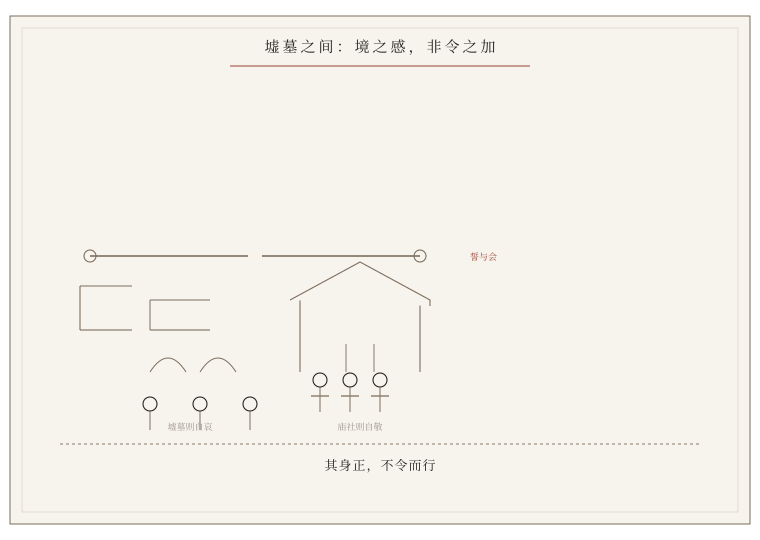

檀弓下 · 四·七十三 · 第 398 课
鲁人有周丰也者，哀公执挚请见之，而曰不可。公曰：「我其已夫。」使人问焉，曰：「有虞氏未施信于民，而民信之。夏后氏未施敬于民，而民敬之。何施而得斯于民也？」对曰：「墟墓之间，未施哀于民而民哀。社稷宗庙之中，未施敬于民而民敬。殷人作誓而民始畔，周人作会而民始疑。孔子曰：『其身正，不令而行；其身不正，虽令不从。』苟无礼义、忠信、诚悫之心以莅之，虽固结之，民其不解乎？」
说什么事：鲁国有一位周丰，哀公执禽为挚求见，他辞而不见。哀公说：我且罢了。派人去问：「有虞氏未曾施信于民，民却信他；夏后氏未曾施敬于民，民却敬他。施了什么，才得到这样？」周丰答：墟墓之间，未曾施哀而人自哀；社稷宗庙之中，未曾施敬而人自敬。殷人作誓，民才开始叛；周人作会，民才开始疑。孔子说：其身正，不令而行。若无礼义忠信诚悫之心以临民，虽以誓盟固结之，民能不散吗？
落在哪一层：以「造境」与「立法」为界。礼造一个地方，人自化；誓会立一条绳子，人自疑。
为何编在此位：上节论政之苛，此节论礼之化。一破一立，正相次。
【经】鲁人有周丰也者，哀公执挚请见之，而曰不可。公曰：「我其已夫。」使人问焉，曰：「有虞氏未施信于民，而民信之。夏后氏未施敬于民，而民敬之。何施而得斯于民也？」对曰：「墟墓之间，未施哀于民而民哀。社稷宗庙之中，未施敬于民而民敬。殷人作誓而民始畔，周人作会而民始疑。孔子曰：『其身正，不令而行；其身不正，虽令不从。』苟无礼义、忠信、诚悫之心以莅之，虽固结之，民其不解乎？」
【注】下贤也。挚，禽挚也。诸侯而用禽挚，降尊就卑之义。／辞君以尊见卑。士礼，先生异爵者，请见之则辞。／已，止也。重强变贤。／时公与三桓始有恶，惧将不安。／言民见悲哀之处则悲哀，见庄敬之处则庄敬，非必有使之者。墟，毁灭无后之地。／会谓盟也。盟、誓所以结众以信，其后外恃众而信不由中，则民畔、疑之。／涖，临。
【疏】此一节论君之临臣民当以礼义忠信为本之事。○「何施而得斯于民也」者：「有虞氏未施信于民，而民信之；夏后氏未施敬于民，而民敬之」，言虞之与夏施何政教以化民。斯，此也，而得如此敬信于民也。○周丰之意，以虞之与夏，由行敬信于民，民见其敬信，民自学之，不须设言号令。故云：古昔丘墟及坟墓之间，是所悲哀之处也。人在其所，未须施设教化令民使哀，而民自哀也。社稷宗庙之中，严凝之处，人在其所，未须施设教化而民自敬。言民之从君，在君身所行，不在言也。若身之不行，言亦无益。故殷人作誓，由身不自行，徒有言誓而民始畔也。周人作会，为身无诚信，而民始疑。苟，诚也。人君之身，诚无礼义、忠信、诚实质悫之心以临化之，虽以言辞誓令坚固结之，民其不解散离贰乎？言当解散离贰也。○案《尚书》夏启作《甘誓》，此言「殷人作誓」；《左传》云「夏启有涂山之会」，又「禹会涂山」，此云「周人作会」者，此据身无诚信，徒作誓盟，民因誓因盟而始疑畔，非谓殷人始作誓，周人始作会。○《穀梁传》云「诰誓不及五帝，盟诅不及三王」者，五帝三王，身行德义，不专用诰誓盟诅，故云「不及」。
执挚 执禽为见面之礼。挚，同「贽」。
请见 请求相见。
已 止，罢。
重强变贤 再三勉强则失敬贤之意。
施 施设、施加。
斯 此。指民之自信自敬。
墟墓 废墟与坟墓。
社稷宗庙 国社国稷与宗庙，皆严凝之地。
作誓 立誓约束。
作会 会盟。
畔 叛。
诚悫 诚朴。
莅 临。
固结 以言辞强力维系。
鲁国有一位叫周丰的人，哀公执禽为挚请求见他，他辞谢不见。哀公说：「我且作罢。」派人去问他：「有虞氏不曾施信于民，民却信他；夏后氏不曾施敬于民，民却敬他。施了什么才得到这样？」周丰答：「墟墓之间，不曾施哀而人自哀；社稷宗庙之中，不曾施敬而人自敬。殷人立誓，民才开始叛；周人会盟，民才开始疑。孔子说：『自身正，不必下命令就行；自身不正，虽下命令也不从。』如果没有礼义、忠信、诚悫之心以临民，即使以言辞强加固结，民能不解散吗？」
此章一问一答，答分三层。
第一层：以地证人（墟墓自哀、庙社自敬）。第二层：以史证失（誓畔、会疑）。第三层：以身证本（其身正）。
三层皆不是在回答「何施」，而是在拆掉「施」这个问法。
第一层 「执挚请见」而「不可」 注云「下贤也」，又云「诸侯而用禽挚，降尊就卑之义」。
君执禽求见一士，已是礼之极；士辞之，亦不为无礼。 注云「士礼，先生异爵者，请见之则辞」——辞是士之礼。
第二层 「我其已夫」 注云「已，止也。重强变贤」——再三勉强，反而失敬贤之意。
君止于此，正是礼。 求贤而至于强，则所求者已非贤。
第三层 问句之失 哀公问「何施而得斯于民」——他要一个「办法」。
此一问，正是全章所破。 周丰的答，句句都在说：不是施什么，是人在什么地方。
第四层 「墟墓之间」与「社稷宗庙之中」 注云「非必有使之者」。
礼最深的效力，不在命令，在场所。 人至墟墓而哀自生，入庙社而敬自生——这不是教化，是境之感。
第五层 「殷人作誓而民始畔」 注云「盟誓所以结众以信，其后外恃众而信不由中」。
誓之立，本为补信之不足；而誓既立，则信反可外求。 绳子一出现，人便不再问自己信不信。
第六层 疏辨「非谓殷人始作誓」 疏云此据「身无诚信，徒作誓盟」言之，非谓誓始自殷。
此一辨极重要：礼家不肯把「制度之始」当作「弊之始」。 弊不在有誓，在无信而用誓。
第七层 「其身正」与「固结」 末句「虽固结之，民其不解乎」——此问其实已答。
礼之所恃者，身也，非辞也。 引孔子语作结，把一切回到一个人身上。
与今日何干 今之治理，多问「用什么办法」，少问「由什么人来」。
此章给一句：先造那个地方，再谈那套办法。
| 左 | 右 |
|---|---|
| 执挚请见 | 降尊就卑 |
| 而曰不可 | 士礼当辞 |
| 我其已夫 | 不强贤 |
| 何施而得斯 | 求术之问 |
| 墟墓之间 | 民自哀 |
| 社稷宗庙 | 民自敬 |
| 作誓而畔 | 信不由中 |
| 作会而疑 | 外恃众 |
| 其身正 | 全章之断 |
画一幅左右对照的简略场景，视点平视。画面左半画一处废墟：一段断墙、两座扁拱小坟，坟前三人低头立，皆垂手。画面右半画一座宗庙：两根立柱、一道屋檐、檐下一道门限，庙前三 人拱手立，身直而不俯。左右两半之间画一条粗横绳，绳的两端各打一个结，绳之正中画一处断口，断口处线条分离。画面下方不画地纹。不画文字。赭色只用在那处断口上。
